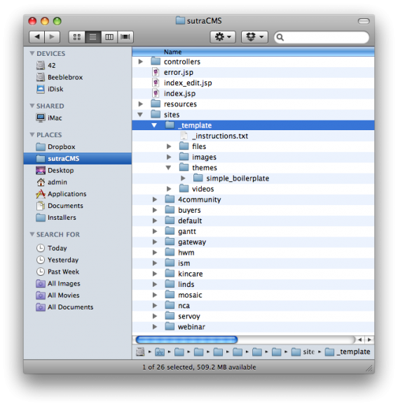
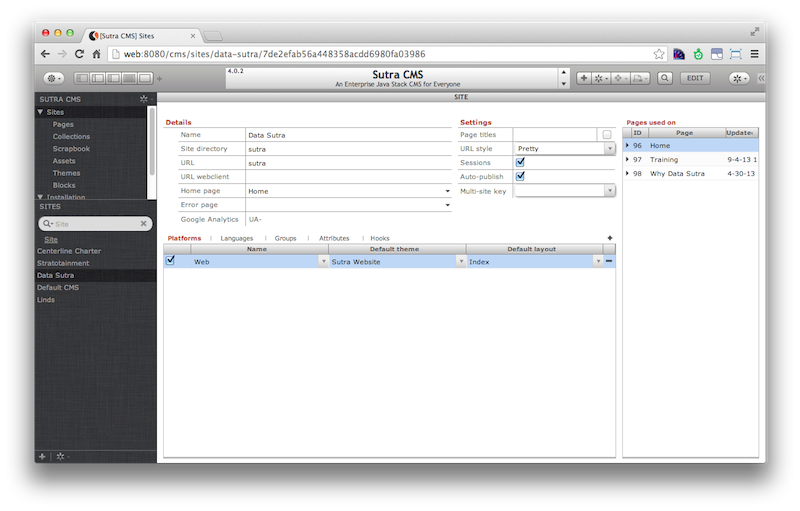

Setup
The Sutra CMS installation includes a sample site and everything needed to run it—site meta data, a theme, some basic blocks, and a few pages.
The sample site can be modified to suit your purposes or you can create many sites as Sutra CMS is multi-site capable from one installation.
Every site requires at minimum a dedicated site directory and site record.
Additionally, it is highly recommended that you create separate Servoy modules to place custom code in so as to not pollute the core Sutra CMS modules. Ideally, each website should have a dedicated module for custom block code. It is also common to create modules for specific functions and workflows that can be used across all of your websites.
Site directory
Site directories are located in /sutraCMS/site/ directory. The
_template directory is boilerplate that you can use as a starting
point for creating a new site directory. It contains all the directory
structures that Sutra CMS expects.
To use, duplicate and rename. A naming convention that is similar to the website name is recommended. You will enter this name in the site record described in the next section.
The files, images and videos folders store uploaded assets of those types. The themes directory contains all the themes your site has access to. Each theme has it’s own folder.

Site record
Site records at minimum needs the Name and Site directory data
points filled in. If the URL field is left blank the value of localhost
will be assumed.
The Site directory data point should have the name of the site directory described in the previous section as its value.

Site module
While you can create entire sites without any custom server-side coding, it is common to extend the functionality of Sutra CMS by customizing code for a particular website or installation, interact with external business workflows, grab data via REST services, and even integrate with entire applications.
See Extending Sutra CMS for details.